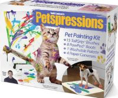
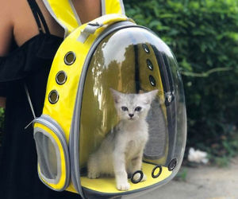

The Isportsman Website
As a cyclist, you have to log into this site each time you want to ride at Fort Gordon. It has been a source of aggravation since it was implimented and not a lot, if any improvements have been made during the three years we have been using it.
The Isportsman Website
What is bad...
- The site will not store your user name/password even though it shows both on the screen. You have to backspace a character and retype it before you can login.
- Once you are logged in, you have to choose your bike route, agree to the disclaimer, agree to check out by a certain time, then go about your business.
- Just now, to return to the site to verify something, I can't log back in because it is telling me the password I just entered is wrong. It did this to me on a ride once and I rode without logging in which can get you banned from the fort if they catch you. They did catch me but I did not get banned that time.
- Tried on my phone and it will not allow me to log back in.
- The login page is designed with a white background which is pretty hard to see in the sun.
- You must check out of Isprortsman. If you forget to check out, see below...
What is good about the site...
- If you forget to check out, they WILL call the phone number registered on the account and they DO NOT care what time it is. You only do that once and then you put a reminder on your phone to check-out every Saturday and Sunday.(Yes, they called my house at MIDNIGHT!) Now you must wonder why this is "good." Fort Gordon's roads are very isolated. If you were to wreck a bike and be off the road a short distance, chances are good no one would find you for quite some time. It is "comforting" to know that they might eventually look for you.
- Since the vast majority log in using their phones, the site is designed to work well on phones.
This is why I am broke...
I went on a search for interesting websites and found this one. A great site for the easily amused...
thisiswhyimbroke.com
I put the target="blank" but now wonder "Should I?" I would almost rather use the back arrow than to close a tab. One of those "preference things" where there is no right or wrong answer.
The good...
- Small photos and short descriptions make the site appealing to me. If you want to see a larger picture or get more infomation, you click on it and there it is.
- I would like to attempt to duplicate the navigation bar.
- I believe you could stay in here for many hours and not see all that is there.
I spent maybe 30 minutes looking at the stuff on the site, there is a ton of CRAP on here. I could literally spend hours looking at through it. So, it kept my interest. The look appealed to me and I am easily amused so there you go...
The bad...
- You will have to decide for yourself. I could not find any bad but I was too fascinated with the shiny objects to look for negative.
Oh they have some cool stuff on this site. And here are just a few of the things I found.

A poop catcher for your best humiliated friend..
For those poor souls who are simply too lazy to clean up after their dog but feel like they should clean up after their dog.

A pet painting kit????

A cat in a bubble...really???
Just one more photo. I found this looking for the end of the pet section.
A chicken skirt???
That is only a few of the things I found. There are so many more and I spent way too much time looking at the stuff.
Ok, just one more.
I found this one while I was checking the site to see how it worked on my phone. Would you believe clicking on it takes you to Amazon? I kid you not!
Brainy Quotes
I found this site pretty hard to read really. The quotes are too close together. Some have photos, some are only text and to me it is hard to pick one out that you like. And ads are mixed in among the quotes that happen to be the exact same size and look so you may just "accidently" click on one. Not like they have a plan or anything.
Motivationping.com
On the other hand, if you like scrolling through huge photos forever trying to find an inspirational quote this is the site for you. The pictures are way too large and had they reduced the size and made them where you clicked to enlarge them, it would have been better.
This could have been about half the size it is.
Reduced it half the size of the original. In my opinion, the site would be far better with the smaller pictures. And I found some duplicates as well. So not a true "100" motivational quotes but who is counting.